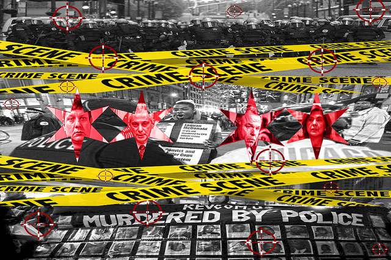

Social Justice Movements: Fighting the Black Genocide
Home
Protest
Black Genocide
Blog
Contact

16 Shots
The American Genocide
Non-Violent
explain
Other Course of Action
explain
Video
Young People Take Lead